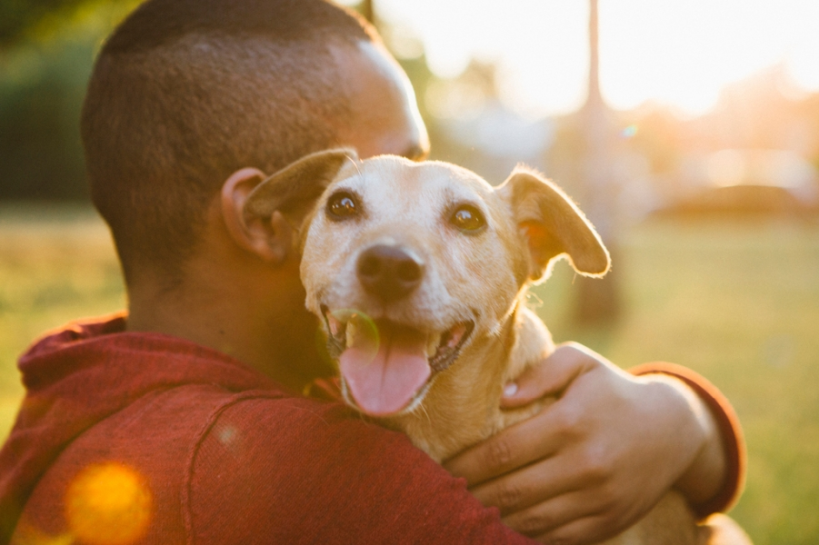

Adoro comprar no Mundo Pet! Sempre encontro tudo o que meu cãozinho precisa, desde ração de qualidade até brinquedos que ele ama. O atendimento é maravilhoso, e a equipe sempre me orienta sobre o melhor para ele. Sem dúvida, é o melhor lugar para mim e meu pet!" - Jose Bezerra

"Ótimo atendimento e produtos de qualidade! Meu pet adora tudo que compro aqui. Recomendo!" - Ana Silva